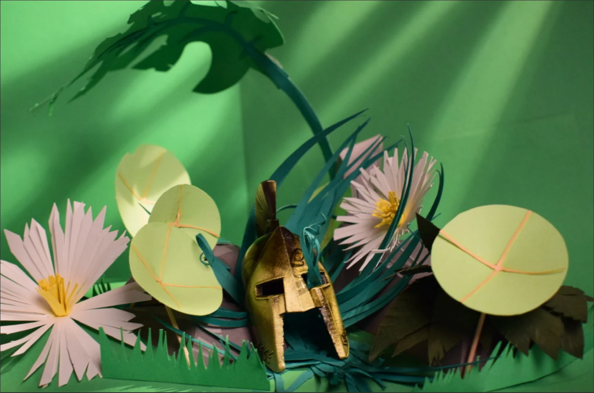
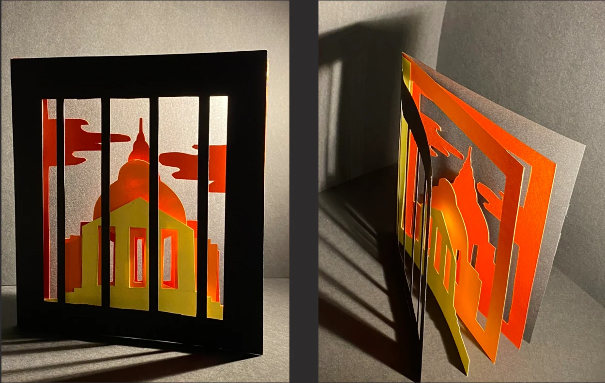
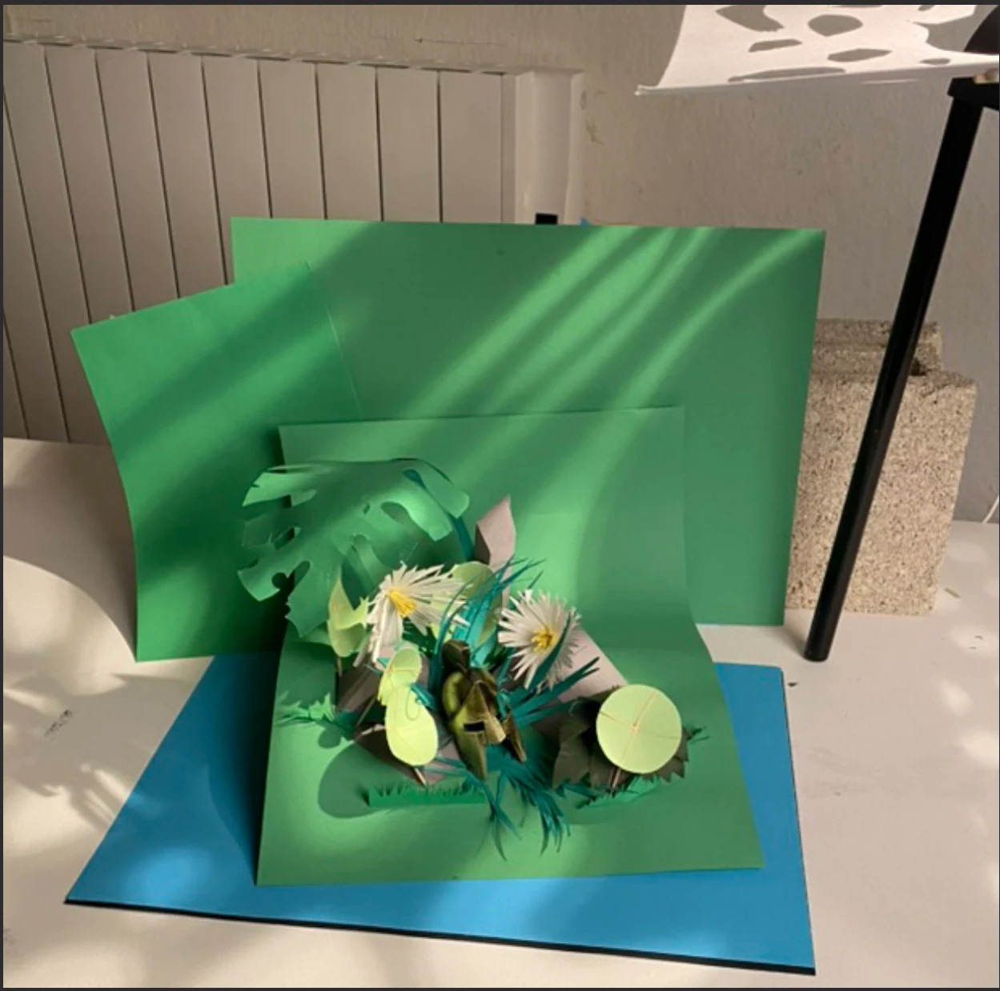

Helmet of time
Mise en scène en papier pour un objet.

Lors d’un workshop d’une semaine, j’ai produit un décor en paper cutting pour créer un univers autour d’un casque spartiate. J’ai imaginé une narration autour de l’objet, désormais abandonné dans la végétation.
Le workshop a commencé par l’exploration de plusieurs techniques de paper cutting.

